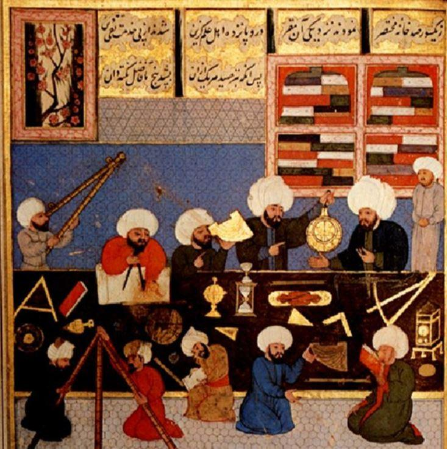
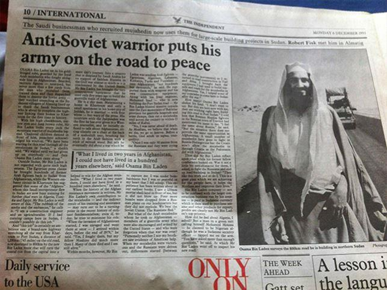
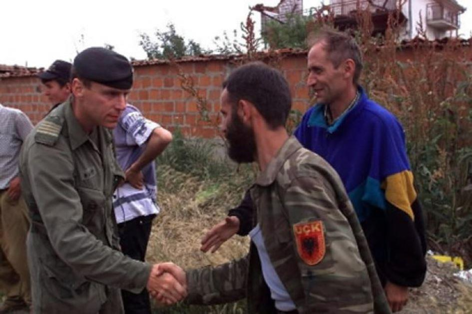

Il fut un temps où le monde arabe était grand. Grand, notamment, par ses connaissances scientifiques. Astronomie, mathématiques, médecine, navigation maritime, etc... Certes, c'était aussi une époque où il était dominateur, expansionniste et esclavagiste... Mais, nous pouvons dire que le monde arabe a été très grand durant tout le moyen-âge jusqu'à la « Reconquista » espagnole. L'islam se répandit pour le meilleur ou le pire... Cela prévaut pour toutes les religions, toutes les cultures de toute façon, chaque médaille ayant sa face et son revers. Mais, le recul du monde arabe préfigura aussi le recul de l'islam intégriste.
S'il est extrêmement dommage d'avoir assisté au recul culturel, technologique et scientifique de ce grand peuple arabe, pour autant pouvons-nous nous réjouir d'en avoir aussi vu s'effacer peu à peu son expression la plus barbare, la plus sanglante, la plus dominatrice.
Cette expression fondamentaliste islamiste fut réveillée au XXe siècle par les Occidentaux en faisant fi au demeurant d'un quelconque renouveau de la culture arabe au sens propre. Les temps n'étaient pas à l'arabophilie mais à l'islamophilie, ce qui est quelque peu différent... Par Occidentaux, disons simplement une partie de l'Europe occidentale ainsi que les Etats-Unis. Les Occidentaux, donc, ont volontairement laissé le monde arabe dans la soumission des peuples colonisés, puis des peuples du Tiers-monde mais ont remis l'islam radical à l'ordre du jour. Cela s'est fait par étapes successives, avec des acteurs différents, parfois antagonistes mais poursuivant le même cheminement, ce qui est assez paradoxal...
La première fois c'était au milieu du XXe siècle durant la 2nde Guerre mondiale quand les Nazis ont pactisé avec les radicaux musulmans dans leur lutte contre le peuple juif. D'une manière plus large, l'idée hitlérienne - comme c'était déjà le cas lors de la « weltpolitik » de Guillaume II lors de la 1ère Guerre mondiale - était de soulever les peuples colonisés d'Afrique du Nord, de les retourner contre leurs colonisateurs avant, évidemment, de les « re-coloniser ». Cela a d'ailleurs failli fonctionner en Égypte...
Et puis, dans les Balkans, il y eut évidemment ces tristes milices SS musulmanes qui répandirent tant de sang chrétien, notamment serbe... Le nazisme fut vaincu. Pour autant, les populations nord-africaines n'eurent pas des pays colonisateurs les récompenses méritées au vu de leurs efforts auprès des Alliés, notamment l'émancipation promise. Le résultat fut, soit, un repli politique (Tiers-monde naissant, sphère soviétique contre la sphère atlantiste) ou bien la montée de l'islam radical. Quoi qu'il en soit, dans tous les cas ce furent de lourdes batailles de décolonisation et d'indépendances.
La seconde fois que la porte de l'islam radical a été rouverte fut la fameuse « Opération cyclone » du cabinet de Jimmy Carter en 1978, c'est-à-dire dans le dernier quart du XXe siècle. Nous en avons parlé tellement de fois que chacun doit commencer à connaître ce qu'il faut bien appeler aussi avoir « ouvert la porte des Enfers » comme dans un scénario de film fantastique de série B.
Monter contre le pouvoir communiste afghan des milices moudjahidines, les financer, les armer et, comme l'Afghanistan n'a jamais été un grand pays militaire, attendre que Kaboul appelle son grand allié soviétique à l'aide. Ce fut le cas en 1979 où l'intervention de l'Armée rouge fut évidemment qualifiée d'« invasion » par la classe médiatico-politique occidentale.
Déjà à l'époque, les Occidentaux prenaient fait et cause contre les réformes agraires et scolaires tentant de moderniser l'Afghanistan et engageaient pour ce pays une lutte d'islam radical. Une lutte « juste » car anti-soviétique ! Alors, pour en revenir à cette fameuse « porte des Enfers », ce scénario de série B, c'est dans le sens que le cabinet de Jimmy Carter a ouvert la voie des tribus Pashtoun de la frontière afgho-pakistanaise. Après les moudjahidines, c'étaient les Talibans et ensuite Al-Qaïda...
À partir d'Al-Qaïda, la nébuleuse a commencé à se répandre. D'ailleurs, Ben Laden était saoudien. Mais, c'est à partir de ce moment (fin du XXe siècle et début du XXIe, soit, les années « deux-mille ») que l'on a commencé à se rendre compte de la poussée extrémiste islamiste sur une bonne partie de la planète et, notamment, dans les pays occidentaux eux-mêmes où, pour des raisons diverses, l'immigration jusqu'alors parfaitement intégrée à un système de valeurs a fait place à une immigration de repli identitaire. Là encore, on a privilégié l'islamophilie dans ce qu'elle avait de plus radicale plutôt que l'arabophilie dans sa diversité. On a privilégié la mosquée salafiste plutôt que l'apprentissage de l'algèbre et du vivre-ensemble entre sunnites, chiites, chrétiens, juifs, etc...
Nous en arrivons alors à la troisième poussée occidentale pro-islamiste. Ce sont évidemment les soutiens aux « Printemps arabes ». Question : comment des femmes occidentales désirant bronzer en maillot de bain deux-pièces sur une plage du Maghreb pouvaient-elles soutenir une révolution démocratique entraînant des islamistes au Parlement des pays touristiques concernés ? Voilà une question... !
Le temps que vous tentiez d'y répondre, les gouvernements français et états-uniens se sont empressés d'assassiner Mouhammar Khadafi afin de reculer une nouvelle fois toute tentative d'Union africaine qui, pourtant, ferait de ce grand continent l'un des plus riches et des plus puissants du monde ! Vint alors le tour, en France, de François Hollande.
C'est sous sa présidence que la plus grande partie de jeunes radicalisés français sont partis combattre en Syrie contre Bachar al Assad. Il faut dire aussi que le gouvernement français s'était engagé dans le soutien d'al-nosra, la branche syrienne d'al-Qaïda et qu'aux dires de Laurent Fabius, Ministre des affaires étrangères de l'époque, Bachar al Assad «ne méritait même pas de vivre ». Autrement dit, le gouvernement de François Hollande a inspiré le Djihad à défaut de l'avoir directement organisé.
Une fois sur place, français et britanniques radicalisés ont rejoint les factions d'al-Qaïda international et c'est alors monté le Califat de Daesh... Et aujourd'hui, ces mêmes pays occidentaux ne savent évidemment pas comment traiter la question de leurs enfants partis faire ce Djihad car ils sont à la fois considérés comme combattants terroristes et à la fois « du bon côté géopolitique »... Quelle épine dans le pied !
Islamistes français en Syrie
Et pourtant, nous aurions si grand à gagner à parler « paix » en français, en arabe, en perse avec l'ensemble des peuples du Proche-Orient ! Mais, la paix pour les Occidentaux n'existe pas tout le temps qu'elle ne suit pas leur logique géo-politique et économique. Vous n'êtes allié dans la place que si vous allez dans leur sens, en sens inverse vous devenez l'ennemi, le dictateur, le boucher... Et quand l'on voit sur le dossier syrien des pays comme Israël et l'Arabie saoudite se mettre sur le même axe, franchement ?! Et quand une intervention française contre le gouvernement syrien est saluée par la Turquie d'Erdogan, franchement ?!
Si les pays occidentaux ont si envie de leur « transition énergétique », alors qu'ils arrêtent d'emmerder le monde pour des histoires de gaz et de pétrole ! Il en faudra toujours, malgré le nucléaire, malgré l'éolien, il faudra toujours un minimum d'énergies fossiles mais réduire des pays à néant, organiser des centaines de milliers de morts uniquement pour assouvir leur soif d'investissement ou, simplement par vengeance de n'avoir pas pu investir ! Là, non, trop c'est trop ! Et le pire, c'est quand dans l'opinion publique on fait en sorte de faire retomber la responsabilité sur le dirigeant du pays que l'on tente d'abattre, bien sûr !
Le monde arabe est déjà suffisamment complexe et conflictuel, multi-ethnique et multi-religieux, avec tant de difficultés géopolitiques, sans parler d'Israël et de la Turquie à l’œuvre eux-aussi. Que l'Occident cesse d'en rajouter. Il faut maintenant arrêter de s'appuyer sur l'indéfendable pour une soi-disant « bonne cause ». Des « gentils rebelles » kosovars de l'UCK, la pire organisation mafieuse du XXe siècle, digne des anciens barbaresques, aux rebelles anti-Assad en Syrie...
Oui, les populations civiles quelles qu'elles soient doivent être protégées des combats, mais, non, l'Occident n'est pas du bon côté ! D'ailleurs, quelle idée l'Union européenne a-t-elle eu de tendre la main à des néo-nazis en Ukraine ? Car Washington lui a demandé d'isoler économiquement la Russie et elle a répondu, à l'époque, « Yes, miss Clinton ! ». Tiens, parlons-en de l'Ukraine ! Quand verrons-nous des frégates occidentales en Mer noire lancer quelques missiles de croisière sur l'artillerie ukrainienne responsable de près de 10000 morts au Donbass depuis 2013 ? Quand ? Le reproche que l'on fait aux Occidentaux c'est justement d'émettre de grandes idées humanistes forcément universelles mais concrètement, sur le terrain, d'avoir des lignes rouges à sens unique et une moralité sélective ! Néo-nazis ukrainiens... Néo-islamistes de la mouvance Daesh... Entre les deux, les Etats-Unis à l'action dans le Caucase et en Asie centrale de façon à fomenter quelques "révolutions de couleur" et autres nationalismes ou poussées intégristes islamistes. Le tout afin d'isoler la Russie comme l'URSS autrefois. Il y a un risque énorme de collusion entre des éléments néo-nazis actuellement en Ukraine et des islamistes de Daesh ! Le pont géographique et géopolitique est là ! Dans quelque égout berlinois, les cendres d'Hitler doivent frémir... c'est la résurgence du IIIe Reich ! Mais alors, ce scénario une fois posé, qui est le nouveau Pétain ? Ne serait-ce pas un certain François Hollande avec sa « poignée de main de l'Élysée » ? C'est vrai, la comparaison historique est facile. Néanmoins, c'était bien le 21 juin 2016 qu'il recevait son homologue Petro Porochenko. L'ultra nationaliste ukrainien et criminel de guerre ! Ensemble, ils réitérèrent les sanctions économiques contre la Russie et coulèrent quasi-définitivement les Accords de Minsk II pourtant signés un an et demi auparavant...
Les valeurs occidentales théoriquement de démocratie, de vivre-ensemble, de laïcité sont des belles valeurs. Ces valeurs ne doivent jamais s'éteindre devant l'intégrisme quel qu'il soit, politique ou religieux. Mais ces valeurs ne sont pas exportables directement. Cela fait des décennies que nous le répétons. Elles peuvent être une source d'inspiration mais doivent être adaptées aux différents peuples et aux différents terrains du monde. Le problème principal pour lequel beaucoup d'étrangers, notamment du Proche-Orient ou d'Afrique et même maintenant d'Europe de l'Est condamnent l'Occident, ce n'est pas tant pour ces valeurs qu'ils peuvent partager, mais, c'est parce que l'Occident se sert d'elles comme d'un faux bouclier pour mener des guerres injustifiées. C'est en cela que les peuples du monde entier finiront par ne plus croire aux valeurs occidentales pourtant si belles initialement car ce sont les Français, les Britanniques ou les Américains qui les salissent par un faux-jeu sur la scène politique mondiale.
Espérons simplement que la démocratie, si chère aux esprits occidentaux, fasse en sorte que les populations occidentales remettent un jour prochain leurs dirigeants dans le bon chemin.
Partager cette page